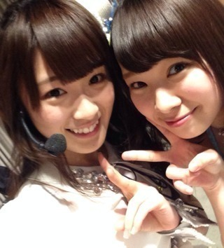
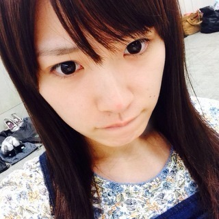
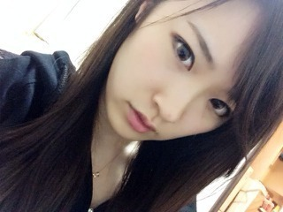
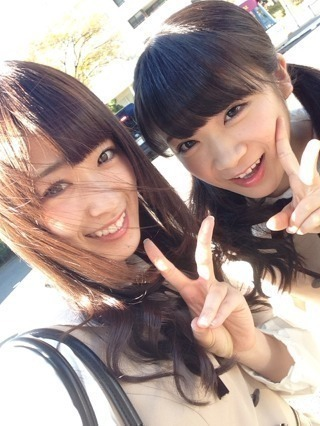
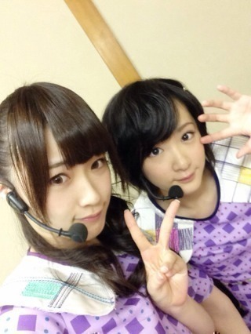

2013/1128Thu（´-`）.｡oO(か ずみん×242
.
.
いつも応援ありがとう(*´ｰ`*人)
.
一億人の親戚、高山一実です☆
.
.
.
かなとまっちゅんがMCをしている
生のアイドルが好き！
先ほど生出演させていただきました♪
.
見てくださった皆さんありがとう♡
カーキュリー(私)は
とても楽しかったです(*´ω`*)
また呼んでちょ！
.
.
.
.
.
昨日のベストアーティスト2013
見てくださいましたか！？
髪型は結局巻き巻きヘアにしましたっ♪
.
.
.
楽屋の近くのドリンクを
取りに行ったら、生駒ちゃんと
松井玲奈さんが！！！
.
そして玲奈さんが
チョコをくださりました！
私はチョコ好きなので
やったぁーっと食べたら
タバスコ味((((/*0*)/笑
.
ドSにアメイジングや！！！
でも私は辛いの好きやから
嬉しかったですヽ(´>∀<`*)ﾉ
ドMにアメイジングや！！！
.
.
.
生駒ちゃんのコミュ力を見習って、
NMBさんの楽屋の前へ。
初めての人と上手く喋れない高山、
自分から話に行けない高山、
でも今日は頑張りましたっ！
.
.
.
まーちゅんさんが
いらっしゃいました♡

髪の毛がツヤツヤで
SO CUTEでした( *´艸｀)
可愛くて面白くて大好きです！
あかりんさんも可愛かった...♡
ずっと思っていましたが
近くで見入ってしまいました...
途中で呼ばれてしまい写真が
撮れなかったのですが、
笑顔を見ただけで胸がいっぱいに
なりました！！！
またいつかお会いしたいです。
NMBさん、
紅白おめでとうございます！！！
.
.
.

村重ちゃんとも撮ったよ♪
ライトの下だから写真が影ってるorz
ごめんね(´;ω;`)
ほぼ初めましてでしたが
めんたいこ！！！と
アメイジング！！は近いものがあると
私の中で勝手に思っていまして...笑
お会いできて嬉しかったです(*´ω`*)
今度ゆっくりお話ししたいです！
めんたいこo(^▽^)o
.
.
可愛い皆さんに囲まれて
感無量でした♡変態か！
まゆゆさんは相変わらず
女神でしたT^T♡
.
.
あぁそしてなぜだろう...
今凄くキンタロー。さんに
会いたくなった！
一時期はアカン警察やドラフト会議や
なんか色んな番組で一緒になって、
けっこう会ってたんだけど
最近はまったくだなぁ(´;ω;`)
.
きっと私のこと忘れてるだろうなぁ...
また会いたいー！！！
.
.
.
.
.
.
会いたい人いっぱいいるー！
家族も地元の友達も高校の同級生も
先生方も今日会えなかったメンバーも。
人が好きだわぁ...
ってなんか私気持ち悪いかな(´-ω-`)
.
でもやっぱり...
.
.
.
.
.
.
.
ファンの皆さんにも早く会いたいなぁ(´･ｪ･｀)♡
.
うん。
なんかこういうの活字でしか言えない
タイプだけど活字でも恥ずいっす...///
.
.
.
.
.
前回の写真の答えは
右→なぁちゃん
左→ゆったん
人形の手→さゆにゃん
でした！！！
.
みんな2人は結構わかったみたいやね♪
3人全員正解したも想像以上に
いらっしゃってびっくりでした！！！
アメイジング＼(^o^)／
答えてくれて人ありがとう(*´ω`*)
MVの感想とかもありがとう(T_T)
.
.
.
.
内容詰め込みすぎてごめんよ〜(´;ω;`)
明日はナタリーさんの
バック8グラビア公開やから
みんな見てね〜♡
.
それでは、
おやすみなさい...☆
2013/1127Wed（´-`）.｡oO(か ずみん×241
バケラッタ\(^3^)/
皆さん、いつも応援ありがとう。
.

.
.
今日は7枚目シングル バレッタの
発売日♡♡
皆さんゲットして
下さいましたか(*ﾟﾛﾟ)！！？
.
.
他のメンバーの個人PV見て
浮気とかしてたら怒るよ！笑
.
私の親友の女の子(数名)は
私の個人PVには目もくれず
まりかのに毎回ハマっているの！！
前会ったらね、
まりっかまりっかまりっか〜♪
ってみんなで歌われて
びっくりしたよ(￣▽￣)
.
.
.
.
そして今日はソニレコ配信日！
そして昭和にアメイジングの発売日！
そしてそして
音楽の祭典 ベストアーティスト2013
にも出演します♪
よかったらチェックしてみてね♡
.
.
.
.
今は待ち時間なんだよ〜☆
すっぴんでブログ書いています！

鼻のニキビ跡がずっと治らなくて
赤鼻のトナカイ状態です...(´;ω;`)
メイクで治しちゃうよ！(￣▽￣)うぎ
.
ムーンプリズムパワー メイクアップ！
.
今日は何の髪型にしようかなぁ...
.
.
昨日はビイストレディース風で
髪を分けて撮ったの！！！

.
本当髪型は悩みますね(ﾉ;ω;)ﾉ
.
.
.
ベストアーティストに
何の髪型で出るかは後でのお楽しみ♪
.
.
.
.
それでは頑張ってきます(*´ｰ`*人)
↑最後にクイズじゃ！
今撮った写真！
後ろの2人プラス人形もってるのは
誰だ＼(^o^)／？？？
.
.
ではではっ♡
2013/1122Fri（´-`）.｡oO（か ずみん×240
.
.
.
バケラッタ\(^3^)/
いつも応援ありがとうございます！
一億人の親戚、高山一実です。
.
コメントもありがとう♭°
AKB共和国の時はちょいちょい後ろで
咳しててすみませんでした>_<
一番辛い時だったのです...
ご迷惑をかけてすみません(´;ω;`)
.
.
.
.
今日は真夏と仕事でした♪

やっぱ自然光好きや〜♡
まだ内容は言えませんが、
とても楽しかったです(っ'ヮ'c)♪うぎ
あぁ、頭良くなりたいぜー！
.
.
.
.
久々に生駒ちゃんと！

うちの母と生駒ちゃん母は
相変わらず仲良しのようで、
昨日も2人でご飯を食べに
行ったそうです。笑
生駒ちゃん、今度4人で
牡蠣食べに行こうね！！！
.
.
.
.

クレープ♡
ちーちゃんじょーさん
ひなちゃんろっちー
で遊園地行った時に食べたよ♪♪
.
私は絶対！生クリームカスタード！
たまに苺入れる(σ´∀｀)σ
.
みんなで遊園地楽しかったな〜！
なんかこのメンバーでいるだけで
楽しいんだけどね♪うぎうぎうぎ
.
年も出身もみんなバラバラなのが
すごいヽ(´>∀<`*)ﾉ
.
.
次はディズニーじゃ♡
.
.
.
.
.
.
.
よし、明日からも頑張るぞ〜！
皆さんのために...♡
.
そんなバカな・・・のMV公開されたから
よかったら見てね♡♡
めっちゃ裏エピソードある！
撮影の学校が地元で嬉しかった☆

☆★☆★☆

※この人声きもいです。
それでは！
ポジピース♪( ´θ｀)ノ
2013/1117Sun（´-`）.｡oO(か ずみん×239
.
.
こんばんは！
いつも応援ありがとう^ ^
.
収録や取材で毎日充実してます！
今日はお茶会とサイン会でした★
来てくださってありがとうでした♡
今日会えなかったみなさんは
12月までおあずけやね( *´艸｀)
期待して待っててよ？///
なんちゃって♪うぎうぎ

空き時間！
私が爆睡してる間にまいまいに
撮られてた((((/*0*)/
まいまいお茶目♡
.
.
.
.
.
.
.
今日でゆきなとせっちゃんは卒業。
正直まだ実感が湧いてないです...
.
私がオーディション受かってすぐ、
まだ実家から通ってる時ですね。
せっちゃんは私に
『帰れなくなったらいつでも
泊まりにおいでね^ ^』
と言ってくれて(T_T)
心強かったなぁ。嬉しかった。
本当に優しい気さくなせっちゃんが
ずーっと大好きです。
.
.
.
ゆきなはね、
洋服の好みがすっごく似ててね、
結構前にいつか一緒に
服買いに行こうって
言ってくれたの。
ゆきな覚えてないかもな〜>_<笑
いつか行きたいな〜(*´ｰ`*人)
おしとやかでおちゃめなゆきなが
ずーっと大好き。
.
.
いつのまにか 僕らは
何かに引き寄せられて
登っているのか
下りてるのか
問いかける心の坂道
.
乃木詩泣ける(T_T)
.
せっちゃん、ゆきな
2年3ヶ月お疲れ様でした。
2人の分まで、がんばる。
乃木坂は不滅じゃ。
.
.
.
.
--------------
乃木どこでは滝に入れなくて
すみませんでした(T_T)
本当のことを言うと
ガジで出たかったです。
皆が辛い思いをしてるのに、
家で寝ているわけにはいかないと。
あとロケへの執着心が
ありました(⌒-⌒; )
ロケが好きなので...
.
ですが今回は
スタッフさん&ドクターストップで
出れませんでした。
気管支炎でです(T_T)
MUSIC FAIRのすぐ後
だったのでちょうど酷くて、
本当すみませんでした...
.
.
もちろんもう元気になったから、
今なら何でもしますよ！！！
バレッタ...
大ヒットしますように(´;ω;`)
.
.
.

お団子娘。
右からのライトだから私が
光飛ばしすぎみたい！笑
.
.
それでは、今日はこの辺で(*´ｰ`*人)
またねっ(∩｡･ω･｡)⊃━♡°.*･love
2013/1113Wed（´-`）.｡oO(か ずみん×238
バレッタ！！
バケラッタ！
いつも沢山の応援ありがとう♡
みんな大好きや。
.
.
.
今日はソニレコ暇つぶしTVの
配信日ですヽ(´>∀<`*)ﾉ
今日は代々木のライブの裏側とかも
公開やで！！！
みなさん、YouTubeで
チェックしてみてくださいっ☆
あ、暇つぶししたい時間とかに
見てね(っ`∀´*)
.
まったりゆったりやってます。
スタッフさんもまい様Kちゃんも
みんないい人で心地よいです( ∩ˇωˇ∩)
昨日の収録も楽しかった！
.
みなさん次回もお楽しみに(*´ｰ`*人)
.
.
.
.
劇場版BAD BOYS Jー最後 に守るものーも
公開しておりますね(*´ω`*)ﾉ
初日舞台挨拶には別の仕事で
出れませんでした>_<
.
じつはこんな帽子を買ってたんです！
BADBOYキャップ！笑
アベイルに売ってました(っ`∀´*)
ちょっと被るの恥ずかしいけど...
.
百瀬遥役ビイストレディースで
ちょっとだけ出てるので、
みなさん良かったら是非♪
.
.
.
.
.
.
.
.
.
最後に。
せっちゃんとゆきなの
卒業が発表されました。
アイドルとは別の夢を持ち始め、
その夢に向かって進むための卒業は
悲しいことじゃないよね。
.
せっちゃんと仲良しのろっちーに
『ろっちー、せっちゃん卒業したら
寂しくない？』
.
と聞いた時、ろっちーは
『寂しくは...ないよ。
卒業しても会えなくなる訳ちゃうし、
他の道でも頑張ってくれたら
まひろも嬉しい！』と
笑顔で言っていて、
かっこいいなと思いました。
乃木坂のメンバーじゃなくなった
としても、もう変わらない絆が
できてるんだなぁと。
.
.
一緒に過ごした時間は宝物だね。
今までありがとう。
.
17日に最後の素敵な思い出作りたいな。
.
.
.
では、今日はこの辺で^ ^
今から収録行ってきまーす！！
マーキュリーパワー メイクアップ☆